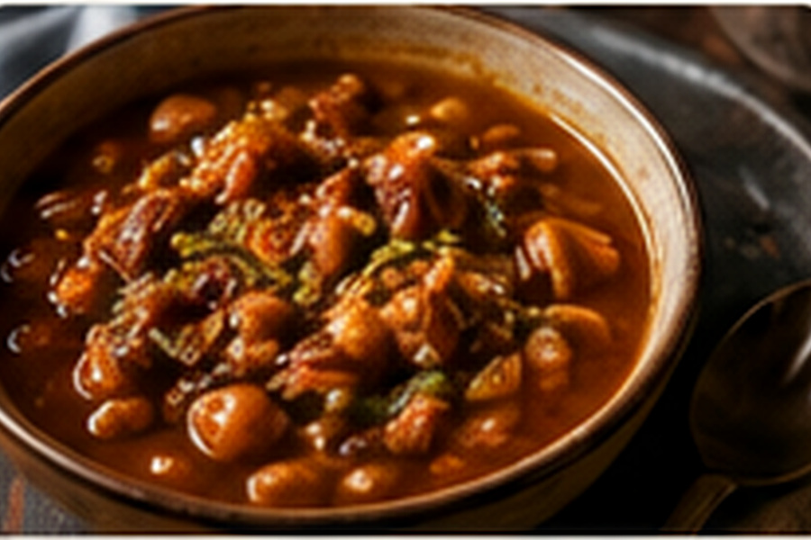

Fossolia
Green beans and carrots cooked with onion, tomato, garlic, ginger and turmeric until tender and deeply seasoned.

About this dish
Fossolia is an Ethiopian green bean and carrot dish that may be cooked as a relatively dry sauté or with enough tomato and liquid to feel more like a light vegetable stew. This version sits between the two: the vegetables become tender in a tomato-onion base, then the excess liquid cooks away so the seasoning clings.
It belongs naturally alongside injera and richer stews such as shiro or doro wat, where its mild vegetable sweetness provides contrast.
A home-style vegetable dish with flexible texture
Ethiopian cook and food educator Eleni Woldeyes describes fossolia as a familiar green-bean-and-carrot preparation that is more common in homes than on some restaurant menus, in part because fresh green beans are not always consistently available in Ethiopian markets. She also notes a useful cultural difference in preferred texture: many Ethiopian cooks take the vegetables softer than American diners often expect.
That makes doneness a matter of context rather than one universal rule. This recipe gives checkpoints for both a firmer and a softer finish so the cook can choose intentionally.
Fossolia varies by household and may include potatoes, different spices or no tomato at all. This is one practical home version.
Preparation notes
Uniform batons help the carrots and beans finish at roughly the same time.
For a softer Ethiopian-style finish, cook several minutes beyond crisp-tender. For more bite, stop earlier.
Fossolia should not sit in a pool of water. Uncover the pan and let excess liquid cook away before serving.
Ingredients & detailed method
Ingredients
- 1 lb green beans, trimmed and cut in half
- 2 medium carrots, cut into even batons
- 1 large onion, diced
- 2 tbsp olive oil or neutral oil
- 2 garlic cloves, minced
- 2 ripe tomatoes, chopped
- 1 tsp turmeric
- 1/2 tsp grated or ground ginger
- 1/2 cup water, plus more as needed
- Kosher salt and black pepper
Method
- 1.Prepare the vegetables. Trim beans, cut carrots into similar-size batons and chop the onion and tomato before heating the pan.
- 2.Cook the onion. Heat oil over medium heat and cook onion 8–10 minutes. Checkpoint: it should be soft and lightly golden at the edges, not browned hard.
- 3.Add aromatics. Stir in garlic, turmeric and ginger for 30–45 seconds until fragrant.
- 4.Cook the tomato. Add tomatoes and a pinch of salt. Cook 5–7 minutes, pressing them with a spoon. Checkpoint: they should break down into a loose sauce.
- 5.Start the carrots. Add carrots and 1/2 cup water. Cover and simmer 7–8 minutes.
- 6.Add the beans. Stir in green beans, cover again and cook 10 minutes, adding a splash of water only if the pan dries out completely.
- 7.Choose the doneness. Checkpoint: for firmer vegetables, stop when the beans bend easily but still have slight snap. For a softer traditional home-style texture, continue 5–10 minutes until both vegetables are fully tender.
- 8.Reduce. Remove the lid and raise heat slightly. Cook 3–5 minutes until excess water evaporates and the tomato mixture coats the vegetables.
- 9.Season. Taste for salt and black pepper. The dish should taste savory and gently warm rather than aggressively spiced.
- 10.Serve. Serve warm with injera, rice or as part of a larger Ethiopian spread.